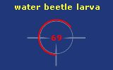

This option allows you to choose this style for the Floating Target Health window.
This cross hair floating window shows the Target's health in a circle around the ring. An invisible button is located inside the center of the ring that will cause you to Face your target when clicked.

Note: To move the window, click and drag the button that appears when you hover over the area at the top left of the ring. A good location for the window is centered on your screen.